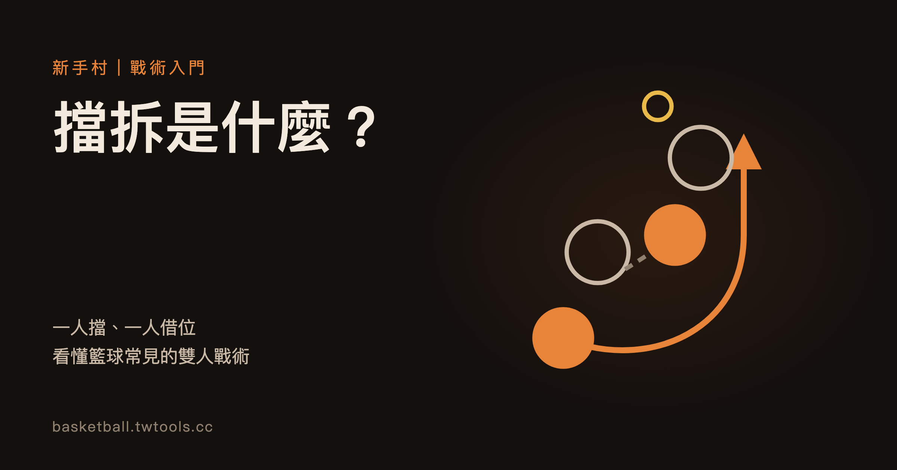

擋拆是什麼？從一次擋人看懂籃球常見的雙人戰術
擋拆（Pick and Roll）是一名球員替持球隊友擋住防守者，隨後切向籃下的雙人配合；改往外圍拉開則常稱外彈（Pick and Pop）。防守方得在兩名進攻者之間選擇，是看懂戰術的一個起點。

新手村｜戰術入門・擋拆（Pick and Roll）
第一次認真看籃球轉播，常會聽到主播提到的戰術詞之一就是「擋拆」。畫面上看起來只是兩個人靠在一起，接著其中一人突然突破或投籃，很難看出到底發生了什麼事。這篇文章只講一個概念：擋拆是怎麼運作的。讀完之後，你應該能在比賽中認出擋拆、說出接下來可能發生的兩三種結果，也知道裁判什麼時候會吹擋人犯規。
擋拆一句話：一個人擋，另一個人借位
擋拆的英文是 Pick and Roll，也常簡稱 PnR。它需要兩名進攻球員：
- 持球者：手上拿著球、通常負責運球或傳球的人。
- 擋人者：不拿球，站到持球者的防守者身邊，用身體擋住那名防守者的路線。
「擋」指的是擋人者站定位置，卡住防守者；「拆」指的是擋人者擋完之後轉身離開，「拆」出空間。兩者連起來，就是先擋、後拆的完整動作。
這個戰術名稱、還有下面會提到的順下、外彈、換防這些詞，都是球迷與教練之間的通用說法，並不是規則書裡的正式用語。NBA 規則書本身只規範「擋人（screen）」這個動作，沒有「Pick and Roll」這個術語。
三個步驟：擋、用、選
第一步，擋。 擋人者走到持球者防守者的身旁，站定位置。從規則角度看，這是一個合法的動作：NBA 規則書把「擋人」定義為球員在不造成不當接觸的前提下，延遲或阻止對手到達他想去的位置。
第二步，用。 持球者等擋人者站穩後，貼著擋人者的身側運球通過。防守者原本緊貼著持球者，現在被擋人者橫在中間，路線被卡住，得繞路或換個方式應對。
第三步，選。 這時防守方同時面對兩個威脅：持球者可以自己投籃或突破，擋人者也可以接球。防守方得在持球者與擋人者之間做選擇與配合：只顧一邊，另一邊就可能出現機會。
擋人者之後去哪：順下與外彈
擋完之後，擋人者常見有兩種去向，圖上用兩個小圖比較。嚴格說，切向籃框才是經典的 Pick and Roll；退到外圍的外彈，英文常另稱 Pick and Pop，一般視為它的變化型（也有術語表把兩者分開列）：
- 順下（roll）：擋人者擋完，轉身切向籃框，等持球者傳球。這正是「Pick and Roll」裡 Roll 的意思。順下的接球位置離籃框近，可在籃下附近進攻。
- 外彈（pop）：擋人者擋完，不切入禁區，而是退到外圍空位，等傳球後直接投籃，英文常稱 Pick and Pop。
兩種選擇不是固定二選一。擋人者要看防守者怎麼站位、持球者怎麼吸引注意，才決定往哪個方向走；同一支球隊也可能在同一場比賽混著用。
防守方怎麼應對
面對擋拆，防守方大致有幾種常見的通用做法，每一種都是用不同方式處理「兩個人怎麼看住兩個威脅」：
- 從擋人上方繞過（over）：防 1 從擋人上方繞過去，繼續貼著持球者防守，但得擠過擋人者。
- 從擋人下方繞過（under）：防 1 從擋人下方繞過去，放棄貼身，換取不被擋住的路線，持球者則可能有出手機會。
- 換防（switch）：防 1 與防 5 互換要防的人，擋人者變由防 1 接手，持球者則由防 5 接手。
- 夾擊（trap）：防 5 暫時離開自己的位置，與防 1 一起壓迫持球者，嘗試迫使他把球傳出去。
上面幾個詞也是通用術語，各隊教練會給自己的戰術取不同名字。它們背後的道理是同一個：擋拆可能讓防守方讓出一個空間，進攻方就設法利用這個空間。
什麼時候會被判犯規：擋人的規則邊界
擋拆需要身體接觸，所以有明確的規則限制。NBA 規則書把擋人的合法邊界寫進兩個地方：
- 定義部分（Rule 4，第 10 節）把擋人界定為「不造成不當接觸、延遲或阻止對手到達想去位置」的合法動作。
- 犯規部分（Rule 12B，第 3 節「By Screening」）規定，擋人者不得做出三件事：對靜止且沒注意到他的對手，站得比一個正常的步伐更近，或在對手的側面或正面造成非法接觸；對移動中的對手，站得太近而沒有給對方避開的機會；以及站定之後，向側面移動或朝被擋者移動。規則同時說明，擋人者可以沿著被擋者的同一方向與路徑移動。
用白話講：擋人者要給對手避開接觸的機會，站定之後不能再往旁邊挪或朝對手頂上去（沿對手同一方向與路徑移動除外）。擋人者一邊移動一邊撞人，通常就是球迷常聽到的「移動式擋人」，可能被吹非法擋人。
需要說明的是，以上規則出處是 NBA 官方 2025-26 規則書。TPBL、PLG、HBL 的比賽規則各自有規則書，本文沒有逐條核對，看這些聯盟的比賽時，請以各聯盟公布的規則為準。想看 TPBL 與 P. LEAGUE+ 兩份規章在註冊名額、選秀與賽制上的差異，可先看本站的兩聯盟規則比較。
看比賽時可以注意的三件事
- 誰在擋？ 找到那名沒有球、卻突然走向持球者防守者的球員，他就是擋人者。
- 防守怎麼換？ 觀察兩名防守者有沒有互換人、有沒有一起壓上去。這決定了哪一名進攻者會出現空檔。
- 擋人者往哪走？ 切向籃框是順下，退往外圍是外彈。看他之後的傳球有沒有到位，可以觀察防守方如何回應。
想把這些觀察和實際比賽結合，可以搭配本站的 NBA 完全指南 認識聯盟與球隊，再到 /standings/ 查看各隊戰績，挑一場比賽專門盯著擋拆看。
本文的規則說明依據 NBA 官方 2025-26 規則書（Official Playing Rules，Rule 4 第 10 節、Rule 12B 第 3 節、Comments on the Rules 的 Screening 條）；戰術詞彙為球迷與教練通用說法，非規則書用語。
常見問題
擋拆是什麼意思？
擋拆（Pick and Roll）是兩名進攻球員的配合：一人替持球隊友擋住防守者，這個動作叫「擋」；擋完之後轉身切向籃框接球，這個動作叫「拆」（順下）。擋完改退到外圍接球，則常稱外彈（Pick and Pop），一般視為它的變化型。整套配合的用意，是讓防守方難以同時顧好兩個人。
擋拆和單純擋人差在哪裡？
擋人只是「擋」這個動作，不一定會連著後面的配合。擋拆則是整套流程：先擋，再由持球者借位突破，最後擋人者切向籃框（順下）或改為外彈，形成兩個進攻威脅。
順下和外彈有什麼不同？
順下是擋人者擋完後切向籃框，接球後在籃下附近進攻；外彈是擋人者擋完後退到外圍空位，接球後投籃。選擇哪一種，取決於防守者站位與擋人者的特點。
擋人什麼時候會被判犯規？
依 NBA 規則書，擋人者不得站得離靜止且沒注意到他的對手比一個正常步伐更近、不得對移動中的對手站得太近而讓他來不及避開，也不得站定後向側面或朝被擋者移動。擋人者一邊移動一邊接觸對手，可能被判非法擋人。台灣聯盟與高中聯賽的規則請以各聯盟公布的規則書為準。